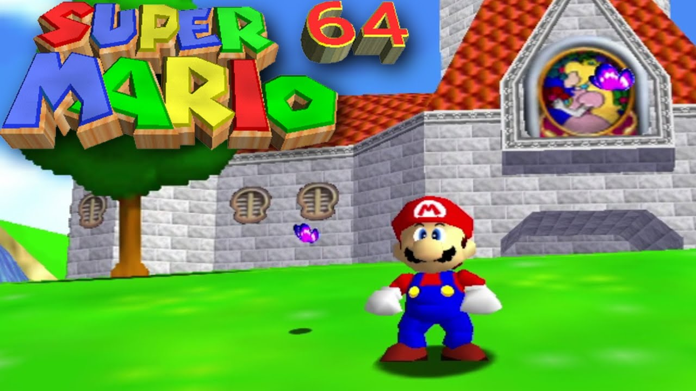

TOP 10 JOGOS RETRÔ
Tetris
Resident Evil 4
Street Fighter II
Pac-Man
Super Mario World
Team Fortress 2
Super Mario 64
Tibia
Final Fantasy VII
Ragnarok Online
Super Mario 64

Super Mario 64 (スーパーマリオ64 Sūpā Mario Rokujūyon) é um jogo
eletrônico de plataforma desenvolvido e publicado pela Nintendo.
Lançado em 1996 para o Nintendo 64, é o primeiro título da série Super
Mario a oferecer gráficos tridimensionais (3D). O jogador controla o
protagonista Mario, que percorre pelo castelo da princesa Peach na
missão de resgatá-la de Bowser. Super Mario 64 apresenta uma
jogabilidade em mundo aberto, com o seu grau de liberdade sendo
através de áreas relativamente grandes compostas principalmente por
polígonos tridimensionais, em vez de apenas sprites bidimensionais
(2D). Ele enfatiza a exploração em vastos mundos, que exigem que o
jogador complete várias missões, além das ocasionais pistas de
obstáculos lineares (como nos jogos de plataforma tradicionais). Ele
preserva muitos dos elementos de jogabilidade e personagens dos jogos
anteriores da franquia, bem como o estilo visual.
O produtor, diretor e criador de Mario, Shigeru Miyamoto, concebeu um
jogo em 3D do personagem durante a produção de Star Fox (1993). O
desenvolvimento de Super Mario 64, realizado pela equipe da Nintendo
Entertainment Analysis & Development, durou cerca de três anos; um ano
foi dedicado ao design, enquanto os dois anos seguintes em trabalho
direto. Os visuais foram criados usando o Nichimen N-World com
Miyamoto pretendendo incluir mais detalhes do que nos jogos
anteriores. A trilha sonora foi composta por Koji Kondo. Um modo
multijogador com Luigi como personagem jogável foi planejado, mas foi
descartado. Juntamente com Pilotwings 64, Super Mario 64 foi um dos
jogos de lançamento do Nintendo 64.
Super Mario 64 é aclamado como um dos melhores jogos eletrônicos de
todos os tempos e foi o primeiro a receber uma pontuação perfeita da
revista Edge. Os revisores elogiaram sua ambição, visual, jogabilidade
e música, apesar de criticarem seu sistema de câmeras. É o jogo mais
vendido do Nintendo 64, com mais de onze milhões de unidades vendidas
até 2003. O jogo deixou uma impressão duradoura no campo de design de
jogos em 3D, com um sistema dinâmico de câmeras e controles analógicos
de 360 graus, estabelecendo um novo arquétipo para jogos
tridimensionais, assim como Super Mario Bros. fez com o gênero de
plataforma com rolagem lateral em 2D. Inúmeros desenvolvedores citaram
Super Mario 64 como uma influência em seus jogos. Uma recriação, Super
Mario 64 DS, foi lançada para o Nintendo DS em 2004, e a versão
original foi relançada para o serviço Virtual Console da Nintendo no
Wii e no Wii U em 2006 e 2015, respectivamente. Em 2020, foi relançado
para Nintendo Switch por meio da coleção Super Mario 3D All-Stars.